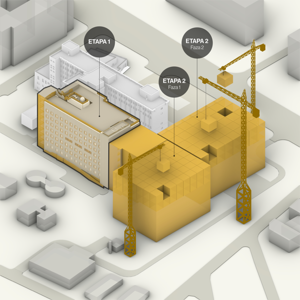
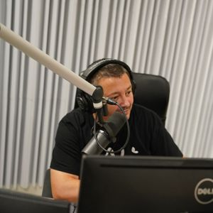
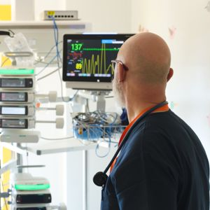

Asociația Dăruiește Viață
First pediatric oncology hospital in Romania
Asociația Dăruiește Viață was founded with a mission to improve Romania's medical infrastructure and patient care, focusing particularly on children battling serious illnesses. The organization gained national attention for its ambitious project: building the first pediatric oncology hospital in Romania funded entirely by donations and private sponsorships. In a system often criticized for underfunded and outdated facilities, their work represents a powerful example of how civic engagement can drive real change.
The hospital has been completed, donated to Marie Curie Hospital, and is already treating patients in the following departments: oncology, surgery, neurosurgery, intensive care, and the operating wing, which has five operating rooms. The hematology-oncology and pediatric radiation therapy departments are next to become operational.
Read more 🡥
Redirect your tax

Are you a citizen of Romania? You may be eligible to redirect 3.5% of your income tax to this NGO.
All you need to do is complete Form 230. It only takes a few minutes.
Learn More
How was this possible?
None of the projects would have been possible without the involvement of regular people. A lot of money came from companies, but a majority actually came from people redirecting their tax income, or SMS donations.
Donating works with a system called stocks. By "investing" in stocks, you are investing in people's happiness and wellbeing! Dăruiește Viață keeps track of every investor on their website. You can also find a table of top donors
here 🡥.
News

The Pediatric Medical Campus is the largest project undertaken by Dăruiește Viață in its more than 14 years of existence...
More

The new Marie Curie Hospital houses a radio studio. That is where Radio Dăruiește Viață began broadcasting...
More

A day in the life of an intensive care doctor is just as hectic as that of a firefighter. You're always on call...
More